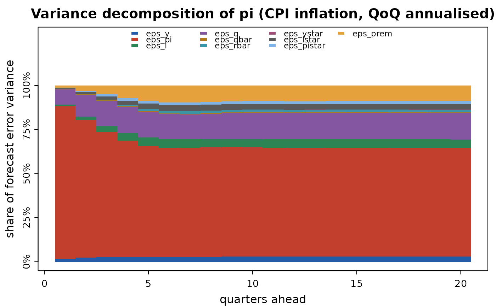

Splits the forecast error variance of each variable at each horizon
into the contributions of the structural shocks — "how much of
inflation uncertainty two years out is the cost-push shock?". For
$$x_t = P x_{t-1} + Q e_t, e_t ~ N(0, S)$$
the h-step forecast error variance is
$$V_h = sum_{j<h} P^j Q S Q' (P^j)'$$
and the share of shock k is the same sum with only column k of
Q active.
Shares sum to one across shocks for every variable and horizon.
Usage
fevd(x, ...)
# S3 method for class 'qpm_solution'
fevd(x, horizon = 24, vars = NULL, shocks = NULL, ...)
# S3 method for class 'qpm_fevd'
plot(x, var = NULL, drop_zero = TRUE, ...)Value
A data frame of class qpm_fevd in long format with columns
variable, shock, horizon, share and variance.
print() shows the dominant shocks; plot() draws stacked shares.
Details
Shares remain well defined when the model has unit roots, even though the variances themselves grow without bound.
Examples
sol <- qpm_solve(qpm_template("bkl"))
fv <- fevd(sol, horizon = 20)
fv
#> <qpm_fevd> Canonical small open economy QPM (BKL, stationary trends) - shares of forecast error variance
#> horizons 1, 4, 8, 20; dominant shocks per variable:
#> y_gap eps_y 66% eps_y 45% eps_pi 41% eps_pi 40%
#> pi eps_pi 87% eps_pi 66% eps_pi 62% eps_pi 61%
#> pi4 eps_pi 87% eps_pi 70% eps_pi 57% eps_pi 57%
#> i eps_pi 40% eps_pi 41% eps_pi 33% eps_pi 36%
#> r eps_pi 54% eps_pi 51% eps_pi 46% eps_pi 47%
#> r_gap eps_pi 54% eps_pi 52% eps_pi 46% eps_pi 46%
#> q eps_q 86% eps_q 54% eps_q 49% eps_q 44%
#> q_gap eps_q 86% eps_q 55% eps_q 50% eps_q 46%
#> q_bar eps_qbar 100% eps_qbar 100% eps_qbar 100% eps_qbar 100%
#> r_bar eps_rbar 100% eps_rbar 100% eps_rbar 100% eps_rbar 100%
#> dy_obs eps_y 57% eps_y 50% eps_y 44% eps_y 38%
#> dy_bar eps_g 100% eps_g 100% eps_g 100% eps_g 100%
#> ystar_gap eps_ystar 100% eps_ystar 100% eps_ystar 100% eps_ystar 100%
#> istar eps_istar 100% eps_istar 100% eps_istar 100% eps_istar 100%
#> pistar eps_pistar 100% eps_pistar 100% eps_pistar 100% eps_pistar 100%
#> rstar eps_pistar 58% eps_istar 51% eps_istar 56% eps_istar 57%
#> prem eps_prem 100% eps_prem 100% eps_prem 100% eps_prem 100%
plot(fv, var = "pi")
